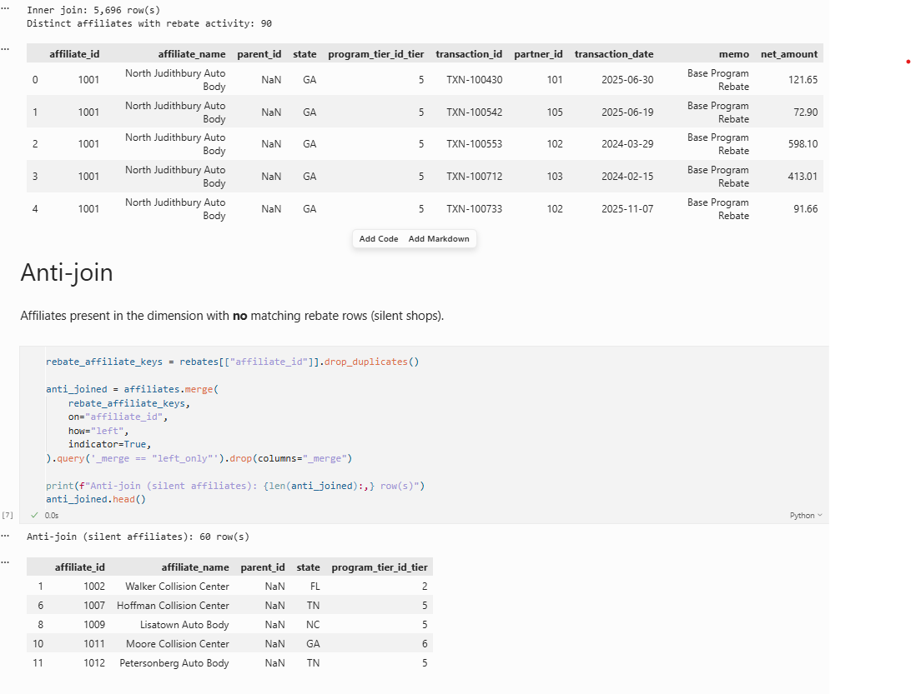
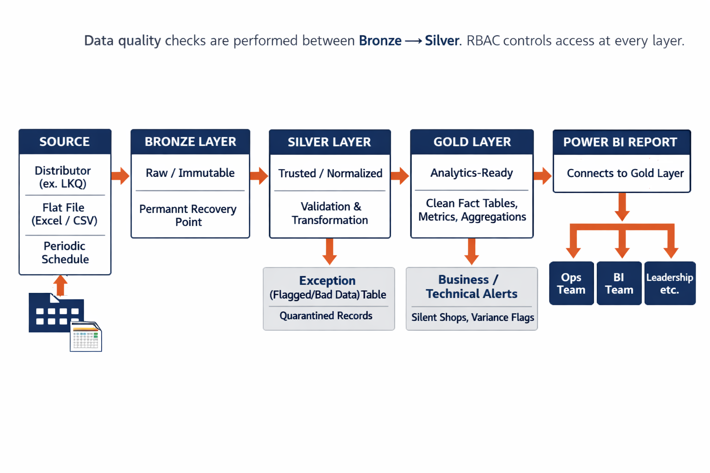
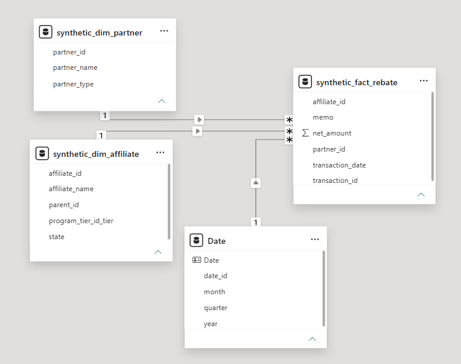
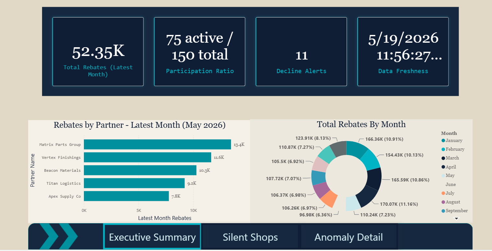
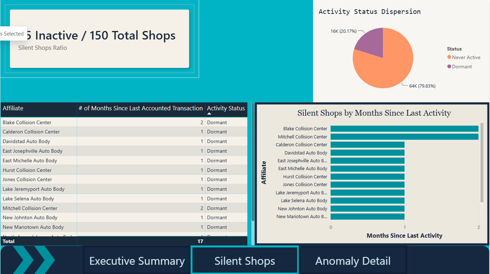
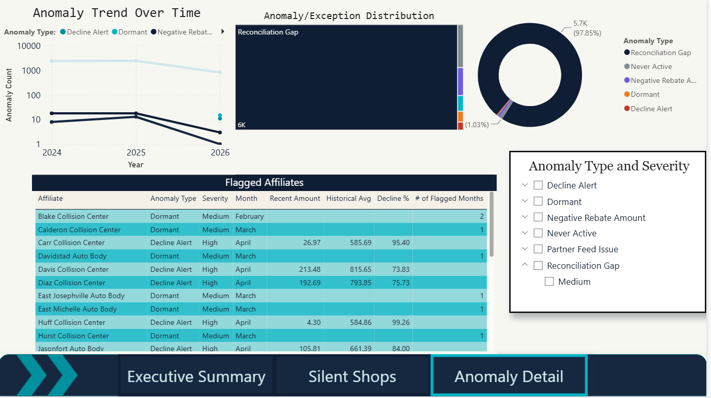

I started with the business, not the data.
Enterprise Collision Network (ECN) operates as a Group Purchasing Organization — a business model that's found across healthcare, hospitality, and independent retail. For this specific industry - Small, local collision shops subscribe to the ECN network because membership costs should be significantly outweighed by the rebate returns they receive from preferred supplier/distributor relationships.
On their own - without ECN or similar automotive GPOs - these local automotives shops would not be able to negotiate the same level of rebates as they do with the network.
ECN earns revenue two ways: membership fees from affiliate shops, and a cut of the rebate dollars they distribute back. That dual revenue stream creates a thread of trust connecting every party in the chain. The distributor sends the rebate file. ECN validates and routes it. The affiliate trusts they're being paid correctly. When the data breaks, the trust breaks.
This 5-day assessment asked me to design and build a solution for automating rebate data ingestion and validation. After developing an understanding of the business model better I concluded that exception monitoring was third necessity. I spent the first day purely on understanding the business landscape and mapping out an intuition of the underlying business logic. Foremost, I defined the actual and rules of play before I touched the pipeline.
What the data revealed.
The dataset covered 11 partners and 2 rebate types across transactions spanning 2024–2026. Before building anything, I let the data surface its own story.
100+ Non-Reporting Locations
Affiliates present in the master list with zero rebate records. An affiliate being on record is enough to treat them as active — silence (lack of activity in the rebate dataset) is a signal worth investigating.
Duplicate Transaction IDs — Not Errors
The same transaction ID appeared across multiple rebate records. This is Rebate Decomposition — a single transaction triggering multiple rebate programs. Deduplicating on transaction_id alone would have silently removed valid revenue.
program_tier_id Behaves as a Tier, Not a Supplier
I assumed program_tier_id was a supplier ID. When it didn't map cleanly to the Partner table, I profiled the column: only 8 distinct values, distributed like a ranking (one affiliate at tier 8, two at tier 7, more at tier 6...). That's a performance tier, not a vendor link. That distinction changed the entire exception logic.
Negative Amounts & Floating Point Issues
Negative netamount values appeared in the data — possibly chargebacks, corrections, or errors. Floating point precision issues in the amount field also required handling at the Silver layer. Both flagged as open questions for the ops team.

One architecture. Addresses Every problem.
Before defining exceptions, I identified the 12 ways rebate data can break — grouped into five risk buckets. Rather than solving each individually, I designed one framework that handles all of them the same way.
Data Entry & Capture
Multiple IDs, missing transactions, partial invoices, late data
Assignment & Mapping
Wrong affiliate or partner credited, stale master data
Calculation & Rules
Wrong amount basis, wrong tier applied, inconsistent definitions
Transaction Integrity
Duplicates, returns not applied
Detection Gaps
No validation, no anomaly detection, no reconciliation — the category this solution directly addresses
Medallion Architecture
The Medallion pattern was the right fit for three reasons: data consistency, a layered backup strategy, and auditability. In a rebate context where affiliates need to trust that their payments are accurate, you need to answer "what did the distributor actually send us?" at any point in time. Bronze does that.
Raw & Immutable
Exactly what the distributor sent. Never touched. Permanent recovery point and audit trail. If anything downstream breaks, we reprocess from here — no re-ingestion required.
Trusted
Date conversion, amount rounding, entity joins, parent-child resolution, quality checks, bad record quarantine. This is where Detect and Quarantine live.
Analytics-Ready
Aggregated metrics, exception flags, Health Scores, business narratives. Everything here is a decision waiting to be made by a human. Built specifically for the BI team.

The choices that mattered most.
Composite Primary Key
Transaction IDs are not unique — the same transaction can generate multiple rebate entries representing a base rebate and separate promotional rebates. Treating duplicates as errors would have silently removed valid revenue from the pipeline.
The composite key — (transaction_id + partner_id + memo + netamount) — treats
each rebate event as its own grain. The inclusion of memo is a forward-looking
decision: it covers edge cases where the first three fields are identical across two legitimately
different events, and provides a buffer if memo values evolve over time.
# Composite key prevents rebate decomposition events from being # cleaned out as duplicates — each program-level event is its own grain silver_df['composite_key'] = ( silver_df['transaction_id'].astype(str) + '_' + silver_df['partner_id'].astype(str) + '_' + silver_df['memo'].fillna('') + '_' + silver_df['net_amount'].astype(str) )
Centralized Exception Table
Rather than building separate exception tables for each error type, one centralized table captures all bad records with the same schema — regardless of whether the issue is a null affiliate ID, a volume anomaly, or a schema mismatch. This makes it auditable, scalable, and straightforward to build reporting on top of.
# Every exception — regardless of type — lands in the same place exception_schema = { 'row_id': str, # unique identifier 'source': str, # which table / feed 'error_type': str, # null_id / volume_outlier / etc. 'severity': str, # HIGH / MEDIUM / LOW 'field': str, # affected column 'detected_at': datetime, 'status': str # open / resolved / escalated }
Two-Audience Alert System
Technical alerts (schema changes, missing files, row count drops) route to the data engineer. Business alerts (affiliate rebate drops >30%, entire parent groups going dark) route to the ops team. Same system, two audiences, routed based on who can actually act on the information.
MSO Silent Group — Scenario Classification
| Scenario | Classification | Why |
|---|---|---|
| Parent group is no longer active / exited ECN | Business alert | Requires business confirmation — not a data error |
| Parent group is newly onboarded | Business alert | Expected inactivity but needs tracking |
| Parent group buying off-contract | Business alert | Indicates potential revenue leakage or compliance issue |
| Parent routing purchases through another entity | Business alert | Requires business investigation into purchasing behavior |
| Children mapped incorrectly (ID drift) | Technical alert | Indicates a mapping or data integration issue |
| Supplier feed incomplete / missing | Technical alert | Indicates an ingestion or file delivery failure |
The schema was already there. I just made it explicit.
The dataset naturally followed a star schema — I didn't impose structure on it. The Rebate table is the fact table, with direct foreign key references to both Affiliate and Partner dimensions. The one addition I made was a derived Date dimension for cleaner Power BI time-intelligence calculations.
Two relationships in the model are worth calling out specifically:
Affiliate.program_tier_id ❌ Partner.id
This is where critical business validation logic lives. Once I established that program_tier_id is a performance tier rather than a supplier ID, this relationship became a validation tool — confirming whether affiliates are being paid at the correct tier level.
Affiliate.parent_id → Affiliate.id (self-referencing)
Multi-Shop Organization hierarchy. When a parent_id is null, the pipeline defaults to the affiliate's own ID — this keeps all MSO rollup reporting structurally sound without breaking parent-group visuals.

The ops team shouldn't have to investigate. The dashboard should tell them.
The Power BI dashboard was designed around one principle: instead of asking the ops team to hunt through hundreds of rows, the dashboard serves as a one-stop-shop to indicate which shops need a phone call today. With the appropriate licensing I would tie the Power BI Service elements to detailed, actionable email alerts given specific threshold amounts.
This version of the dashboard includes three completed pages and two Phase 2 designs pending additional business rules:
Executive Summary
Total rebates, active vs silent affiliate counts, exception counts, data freshness timestamp. Designed for leadership-level consumption at a glance.
Silent Shops
Zero-activity affiliates filtered by parent group and state. Helps the ops team identify whether silence is one shop or an entire Multi-Shop Organization.
Anomaly Detail
Negative amounts, volume outliers, bad data flags — each with a plain-English "Reason for Flag" narrative column. No investigation required to understand why a record is flagged.



This isn't just cleaner data. It's three things ECN can't do without it.
Reliability as a Brand
Clean, accurate, timely data raises ECN's credibility with both suppliers and affiliates. Trust is the product — the pipeline protects it.
Negotiation Leverage
Provable affiliate sponsor compliance (97%+) gives ECN leverage to negotiate higher rebate percentages at contract renewal. Data becomes a negotiating asset.
Decreased Audit Risk
Accurate automation prevents the scenario where a supplier realizes they overpaid and demands money back a year later. The immutable Bronze layer is the receipt.
The rebate problem is the first problem. But the solution described here doesn't just fix the rebate problem — it builds the data foundation that everything else the business wants to do with data will eventually sit on top of.
What this taught me.
The most useful feedback I received after this project was that my technical decisions were clear, but I hadn't consistently connected them to commercial outcomes. Not "I flagged 106 silent shops" — but "over 100 affiliates represent unrecovered rebates that should show up on next quarter's reconciliation." The engineering is only half the story. The other half is what it means for the business.
I've carried that forward. Every technical decision now gets a "so what" — one sentence that translates the implementation into a business outcome. It's a small habit with a significant impact on how technical work lands in a room of mixed audiences.
I'm also glad I documented my assumptions explicitly and flagged them as assumptions. Working with one month of data against a production-scale problem means everything is inference until it's validated. The discipline of separating "what I built" from "what I'd need to confirm" is one I'll keep.